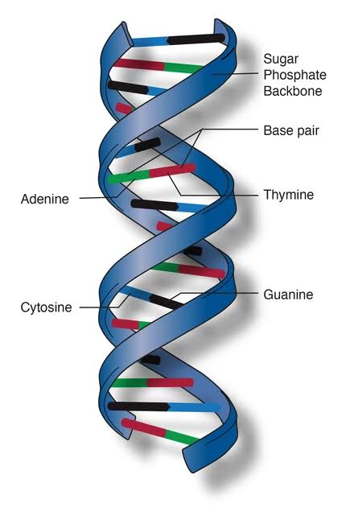
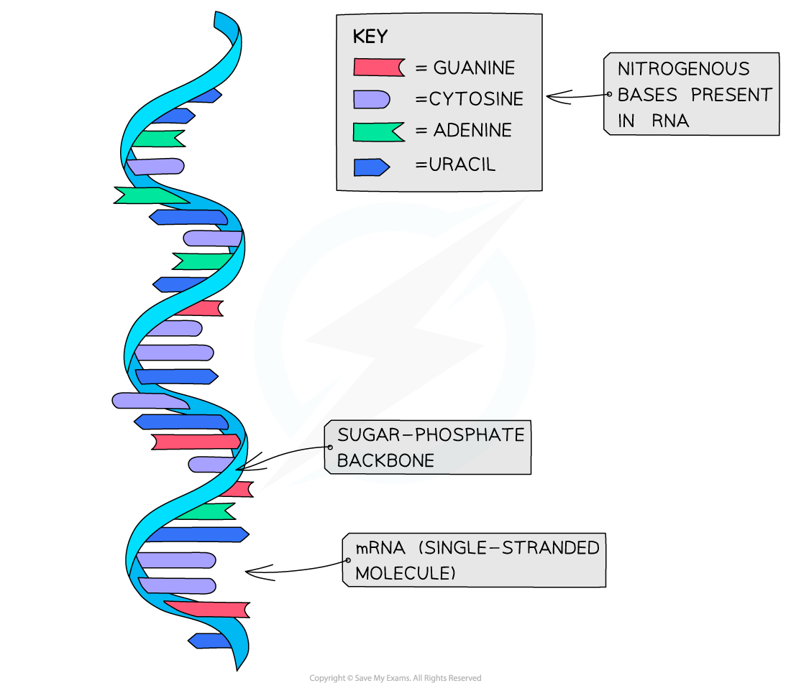
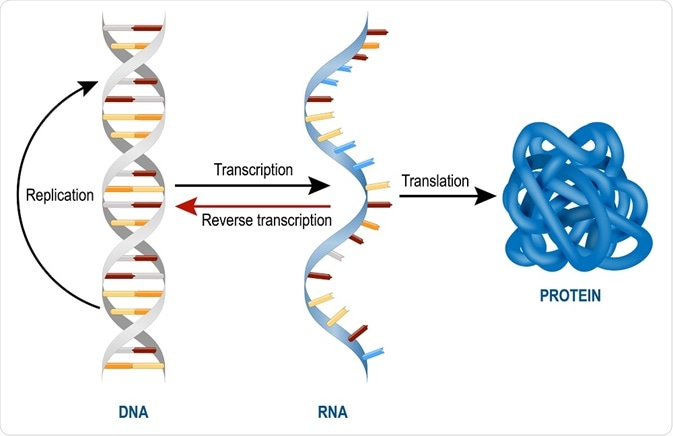

Nucleic acids, DNA (deoxyribonucleic acid) and RNA (ribonucleic acid), are crucial biomolecules responsible for carrying and transmitting genetic information in living organisms.
DNA (Deoxyribonucleic Acid):
- Structure:DNA is composed of two long strands forming a double helix. Each strand consists of nucleotides, which have three components: a sugar molecule (deoxyribose), a phosphate group, and one of four nitrogenous bases (adenine, thymine, cytosine, or guanine).
- Base pairing: Adenine pairs with thymine (A-T), and cytosine pairs with guanine (C-G). This complementary base pairing ensures the faithful transmission of genetic information during processes like replication.
- Function:DNA serves as the primary storage of genetic information. Genes, segments of DNA, encode instructions for the synthesis of proteins and play a fundamental role in determining an organism's traits.
RNA (Ribonucleic Acid):
- Structure:RNA is typically a single-stranded molecule, and its structure also includes nucleotides with a ribose sugar, a phosphate group, and one of four nitrogenous bases (adenine, uracil, cytosine, or guanine).
- Types of RNA:There are three main types of RNA:
- mRNA (Messenger RNA):Carries genetic information from DNA to the ribosome for protein synthesis.
- tRNA (Transfer RNA):Transfers amino acids to the ribosome during protein synthesis.
- rRNA (Ribosomal RNA):Combines with proteins to form ribosomes, the cellular structures where proteins are synthesized.
- Function:RNA plays a central role in translating genetic information from DNA into proteins. It acts as an intermediary in the synthesis of proteins by conveying the genetic code from DNA to the cellular machinery responsible for protein production.
In summary, DNA stores genetic information in its double-stranded helical structure, while RNA translates and carries this information to facilitate protein synthesis. The specificity of base pairing ensures the accurate transmission of genetic instructions, contributing to the diversity and functioning of living organisms.
